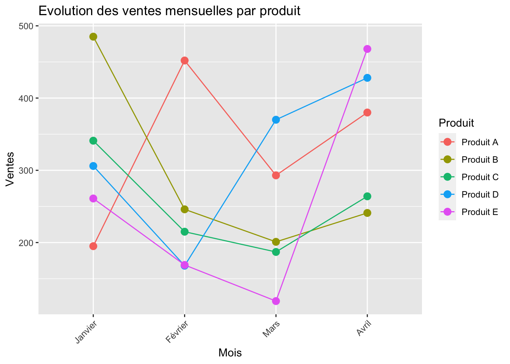
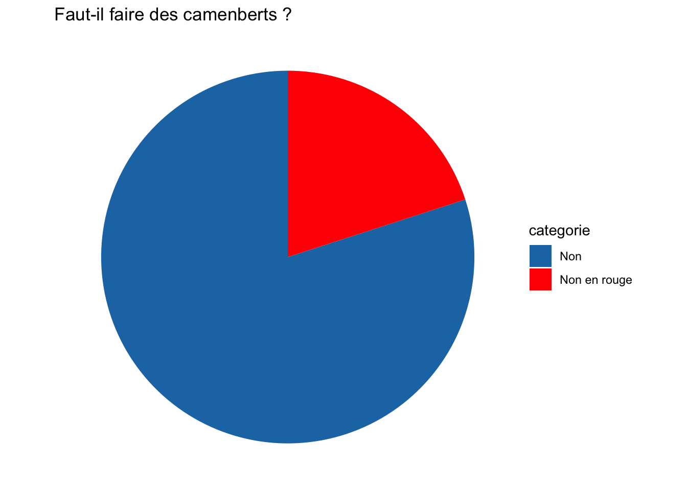
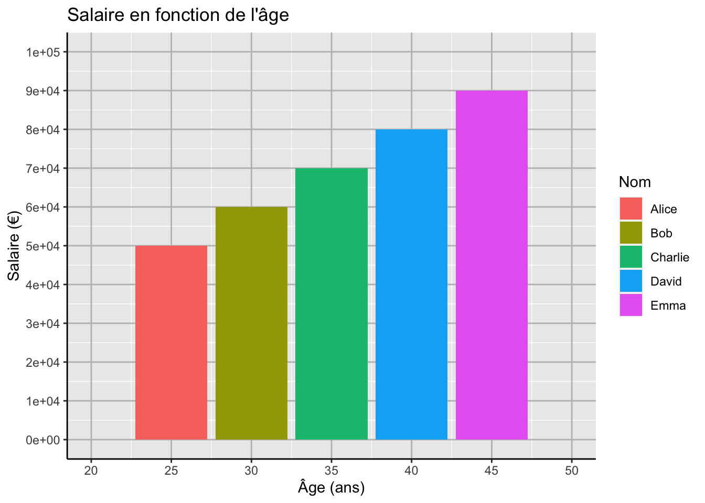

library(ggplot2)Créer des graphiques avec R en utilisant ggplot2
Faire des graphiques est un moyen puissant de transformer des données brutes en informations exploitables et de les communiquer de manière efficace à un public diversifié. Cela joue un rôle crucial dans la prise de décision, la résolution de problèmes et la génération de nouvelles connaissances.
Barplot
Un barplot, ou diagramme à barres, est un type de visualisation de données qui représente les données sous forme de barres rectangulaires. Chaque barre représente une catégorie spécifique, et la hauteur de la barre est proportionnelle à une valeur numérique associée à cette catégorie.
# Création d'un data frame d'exemple
data <- data.frame(
Catégorie = c("A", "B", "C", "D", "E"),
Valeur = c(20, 35, 15, 30, 25)
)
# Création du barplot avec ggplot2
ggplot(data, aes(x = Catégorie, y = Valeur)) +
# Barres bleues, hauteur = valeurs des données
geom_bar(stat = "identity", fill = "skyblue") +
# Ajout de titres et étiquettes
labs(title = "Exemple de Barplot", x = "Catégorie", y = "Valeur")Histogrammes
Un histogramme est utilisé pour représenter la distribution des valeurs d’une seule variable quantitative, en divisant la plage des valeurs en intervalles et en comptant le nombre d’observations dans chaque intervalle.
# Création d'un nouveau data.frame
noms_produits <- c("Produit A", "Produit B", "Produit C",
"Produit D", "Produit E")
mois <- rep(c("Janvier", "Février", "Mars", "Avril"),
each = length(noms_produits))
ventes <- round(runif(length(noms_produits) * length(unique(mois)),
min = 100, max = 500))
data2 <- data.frame(
Produit = rep(noms_produits, times = length(unique(mois))),
Mois = mois,
Ventes = ventes
)# Création d'un histogramme pour visualiser la distribution des ventes mensuelles
ggplot(data2, aes(x = Ventes)) +
# Histogramme bleu avec bord noir
geom_histogram(binwidth = 50, fill = "skyblue", color = "black") +
# Titres et étiquettes
labs(title = "Histogramme des ventes mensuelles", x = "Ventes",
y = "Fréquence")Scatterplot et Jitter
Un scatterplot, également connu sous le nom de nuage de points, est une visualisation de données qui représente les valeurs de deux variables quantitatives sur un plan cartésien. Chaque point sur le graphique représente une paire de valeurs, une pour chaque variable. L’axe horizontal (axe des x) représente généralement une variable, tandis que l’axe vertical (axe des y) représente l’autre variable.
# Création de données d'exemple
# (Pour la reproductibilité)
set.seed(123)
# Nombre de points
n <- 50
# Données pour l'axe x (distribution normale)
x <- rnorm(n, mean = 10, sd = 3)
# Données pour l'axe y (relation linéaire avec x + bruit)
y <- 2*x + rnorm(n, mean = 0, sd = 5)
# Création d'un scatterplot pour visualiser la relation entre les variables x et y
plot(x, y, main = "Scatterplot avec Données Simulées",
# Points bleus, ronds pleins
xlab = "X", ylab = "Y", col = "blue", pch = 16) Boxplot
Un boxplot, également connu sous le nom de boîte à moustaches, est un type de visualisation de données qui représente graphiquement la distribution des données et permet de visualiser la médiane, les quartiles et les valeurs aberrantes éventuelles d’un ensemble de données.
# Convertir la variable "Mois" en facteur avec un ordre spécifique des niveaux
data2$Mois <- factor(data2$Mois, levels = c("Janvier", "Février", "Mars", "Avril"))
# Création du boxplot avec ggplot2
# Boxplot avec coloration par mois
ggplot(data2, aes(x = Mois, y = Ventes, fill = Mois)) +
geom_boxplot() +
# Titres et légendes
labs(title = "Boxplot des ventes mensuelles", x = "Mois", y = "Ventes", fill = "Mois") +
# Étiquettes de l'axe x inclinées
theme(axis.text.x = element_text(angle = 45, hjust = 1)) 
Lines
Un lines plot, également appelé line chart ou graphique linéaire, est une forme de visualisation de données qui représente la relation entre deux variables quantitatives en traçant des points de données connectés par des lignes droites. Il est couramment utilisé pour montrer l’évolution ou les tendances des données sur une période de temps ou dans une séquence ordonnée.
# Création du lines plot avec ggplot2
# Lignes par produit
ggplot(data2, aes(x = Mois, y = Ventes, color = Produit, group = Produit)) +
geom_line() +
# Points pour marquer les données
geom_point(size = 3) +
# Titres et légendes
labs(title = "Evolution des ventes mensuelles par produit", x = "Mois", y = "Ventes",
color = "Produit") +
# Étiquettes de l'axe x inclinées
theme(axis.text.x = element_text(angle = 45, hjust = 1))
Pieplot
Un pieplot, c’est un peu beaucoup inutile, et c’est moche en plus.
# Charger les packages nécessaires
library(ggplot2)
# Créer un dataframe avec vos données
# Ces valeurs représentent les pourcentages pour chaque catégorie
donnees <- data.frame(
categorie = c("Non", "Non en rouge"),
valeur = c(80, 20)
)
# Créer le pie plot
graphique_pie <- ggplot(donnees, aes(x = "", y = valeur, fill = categorie)) +
geom_bar(stat = "identity", width = 1) +
# Utiliser des coordonnées polaires pour le graphique en secteurs
coord_polar("y", start = 0) +
# Ajouter un titre
labs(title = "Faut-il faire des camenberts ?") +
# Couleur bleue pour "Non" et rouge pour "Non en rouge"
scale_fill_manual(values = c("#1f77b4", "red")) +
# Supprimer les axes et le fond
theme_void() +
# Placer la légende à droite du graphique
theme(legend.position = "right")
# Afficher le pie plot
print(graphique_pie)Personnaliser des graphiques
Personnaliser des graphiques est une pratique courante pour rendre les visualisations de données plus attrayantes et informatives.
Voici quelques-unes des façons dont vous pouvez personnaliser des graphiques avec ggplot2 en R :
Changer les couleurs et les styles des éléments
-
Utilisez les paramètres
coloretfilldansaes()pour changer les couleurs des points, des lignes ou des barres. -
Utilisez des échelles de couleurs personnalisées avec
scale_color_manual()etscale_fill_manual()pour définir des couleurs spécifiques. -
Utilisez les paramètres
linetype,shape,sizepour modifier les styles des lignes, des points ou des barres.
library(ggplot2)
# Exemple de graphique à points avec couleurs et styles personnalisés
data <- data.frame(
Nom = c("Alice", "Bob", "Charlie", "David", "Emma"),
Age = c(25, 30, 35, 40, 45),
Salaire = c(50000, 60000, 70000, 80000, 90000)
)
# Création d'un graphique en barres pour visualiser la relation entre l'âge, le salaire
# et l'individu
# Définit Age sur l'axe X, Salaire sur Y, coloré par Nom
ggplot(data, aes(x = Age, y = Salaire, fill = Nom)) +
# Affiche les barres séparées par Nom
geom_bar(stat = "identity", position = "dodge") +
# Couleurs personnalisées pour chaque Nom
scale_fill_manual(values = c("Alice" = "#EB9C64", "Bob" = "#FF8789",
"Charlie" = "#8FBF9F", "David" = "#346145", "Emma" = "#554E4F"))Ajouter des titres et des étiquettes
-
Utilisez la fonction
labs()pour ajouter des titres aux axes x et y, ainsi qu’un titre au graphique. -
Utilisez
theme()pour ajuster l’apparence des titres et des étiquettes d’axe, par exemple en changeant la taille ou la police.
# Création d'un graphique en barres avec Age en X et Salaire en Y, coloré par Nom
ggplot(data, aes(x = Age, y = Salaire, fill = Nom)) +
# Barres individuelles par Nom, représentant le Salaire
geom_bar(stat = "identity", position = "dodge") +
# Titre et étiquettes des axes
labs(title = "Salaire en fonction de l'âge", x = "Âge (ans)", y = "Salaire (€)") +
# Style des titres des axes
theme(axis.title = element_text(size = 12, face = "bold"),
# Style du titre principal
plot.title = element_text(size = 14, face = "bold")) 
Personnaliser les axes
-
Utilisez
scale_x_continuous()ouscale_y_continuous()pour personnaliser les échelles des axes x et y, par exemple en définissant les limites ou les étiquettes des graduations. -
Utilisez
theme()pour ajuster l’apparence des axes, par exemple en ajoutant des lignes de grille ou en modifiant les couleurs.
ggplot(data, aes(x = Age, y = Salaire, fill = Nom)) +
geom_bar(stat = "identity", position = "dodge") +
# Utilise des barres séparées pour chaque Nom
# Limite l'axe X de 20 à 50 ans avec des intervalles de 5 ans
scale_x_continuous(limits = c(20, 50), breaks = seq(20, 50, 5)) +
# Limite l'axe Y de 0 à 100000 € avec des intervalles de 10000 €
scale_y_continuous(limits = c(0, 100000), breaks = seq(0, 100000, 10000)) +
# Ajoute un titre et des étiquettes d'axe
labs(title = "Salaire en fonction de l'âge", x = "Âge (ans)", y = "Salaire (€)") +
# Personnalise les lignes des axes
theme(axis.line = element_line(color = "black", linewidth = 0.5),
# Personnalise les lignes de grille principales
panel.grid.major = element_line(color = "gray", linewidth = 0.5))Modifier les légendes
-
Utilisez
guides()pour modifier l’apparence des légendes, par exemple en ajustant la position ou en désactivant une légende spécifique. -
Utilisez
labs()pour renommer les légendes ou changer leur titre.
ggplot(data, aes(x = Age, y = Salaire, fill = Nom)) +
# Barres pour chaque personne, séparées par âge
geom_bar(stat = "identity", position = "dodge") +
# Ajout de titres et étiquettes d'axe
labs(title = "Salaire en fonction de l'âge", x = "Âge (ans)", y = "Salaire (€)") +
# Ajout d'une légende avec titre pour les couleurs
guides(fill = guide_legend(title = "Nom"))
On constate donc qu’il faut s’appeller Emma pour gagner beaucoup d’argent.
Créer un graphique multipanneaux
Les graphiques multipanneaux sont utiles pour comparer plusieurs séries de données ou pour visualiser les données en fonction de plusieurs variables catégorielles.
# Création d'un jeu de données fictif pour les ventes de produits par région et par mois
set.seed(123) # Pour la reproductibilité
# Régions
regions <- c("Nord", "Sud", "Est", "Ouest")
# Produits
produits <- c("Salade", "Tomate", "Oignon", "Samourai")
# Mois
mois <- c("Janvier", "Février", "Mars", "Avril", "Mai", "Juin", "Juillet", "Août",
"Septembre", "Octobre", "Novembre", "Décembre")
# Générer des données de ventes aléatoires
donnees_ventes <- data.frame(region = rep(regions, each = length(produits) *
length(mois)),
produit = rep(produits, times = length(regions) *
length(mois)),
mois = rep(mois, each = length(produits),
times = length(regions)),
ventes = round(runif(length(regions) * length(produits) *
length(mois), min = 100, max = 1000)))# Charger les packages nécessaires
library(ggplot2)
# Définir une palette de couleurs
palette_couleurs <- c("#FF9999", "#66CCCC", "#FFCC66", "#99CC99")
donnees_ventes$mois <- factor(donnees_ventes$mois, levels = c("Janvier", "Février",
"Mars", "Avril", "Mai", "Juin", "Juillet", "Août", "Septembre", "Octobre", "Novembre",
"Décembre"))
# Créer le graphique multipanneaux avec une présentation plus esthétique
graphique <- ggplot(donnees_ventes, aes(x = mois, y = ventes, fill = produit)) +
# Barres plus fines
geom_bar(stat = "identity", position = "stack", color = "white", width = 0.7) +
# Diviser le graphique en panneaux en fonction des régions
facet_wrap(~ region, scales = "free", nrow = 2) +
# Utiliser la palette de couleurs définie
scale_fill_manual(values = palette_couleurs) +
labs(title = "Ventes mensuelles par région et par produit", x = "Mois", y = "Ventes") +
# Utiliser un thème minimal pour le graphique
theme_minimal() +
theme(axis.text.x = element_text(angle = 45, hjust = 1),
# Placer la légende en bas
legend.position = "bottom",
# Supprimer le titre de la légende
legend.title = element_blank(),
# Mettre la légende dans une boîte horizontale
legend.box = "horizontal",
# Espacement entre les panneaux
panel.spacing = unit(1, "lines"),
# Supprimer le fond des panneaux
strip.background = element_blank(),
# Texte en gras pour les titres des panneaux
strip.text = element_text(face = "bold"))
# Afficher le graphique
print(graphique)Créer une carte
Les “maps” sur R font référence à la représentation graphique de données géographiques sous forme de cartes. Elles sont utilisées pour visualiser des données spatiales, telles que des données démographiques, des données météorologiques, des données environnementales, etc. Les cartes sont particulièrement utiles pour visualiser des informations qui varient dans l’espace et pour identifier des tendances ou des modèles géographiques. 🗺️
Installation des packages nécessaires
Créer une carte avec un marqueur sur Toulouse
# Construction d'une carte interactive
map <- leaflet() %>%
# Ajout de tuiles de carte par défaut (OpenStreetMap)
addTiles() %>%
# Ajout d'un marqueur à Toulouse avec un popup
addMarkers(lng = 1.43, lat = 43.6, popup = "Ce marqueur est placé à Toulouse")
# Affiche la carte
mapCréer un dataframe pour ajouter des marqueurs supplémentaires
# Création d'un data.frame avec des données de localisation pour Toulouse
dataToulouse <- data.frame(
lng = c(1.431889991011, 1.448399993334, 1.447109657227), # Longitudes des lieux
lat = c(43.609126998861, 43.606276020224, 43.604503567579), # Latitudes des lieux
label = c("The Botanist Pub", "IA School", "Jardin Pierre Goudouli") # Noms des lieux
)Affichage de la carte avec le code en intégralité
dataToulouse <- data.frame(
lng = c(1.431889991011, 1.448399993334, 1.447109657227),
lat = c(43.609126998861, 43.606276020224, 43.604503567579),
label = c("The Botanist Pub", "IA School", "Jardin Pierre Goudouli")
)
# Initialisation d'une carte interactive avec des données spécifiques à Toulouse
map_Toulouse <- leaflet(dataToulouse) %>%
# Ajout des tuiles par défaut d'OpenStreetMap
addTiles() %>%
# Ajout de marqueurs sur la carte avec des popups pour chaque lieu
addMarkers(~lng, ~lat, popup = ~label) %>%
# Utilisation de tuiles Stamen Toner Lite pour un style de carte différent
addProviderTiles(providers$Stamen.TonerLite)
# Affichage de la carte
map_ToulouseMaintenant que vous savez créer des graphiques avec R, passons aux exercices !